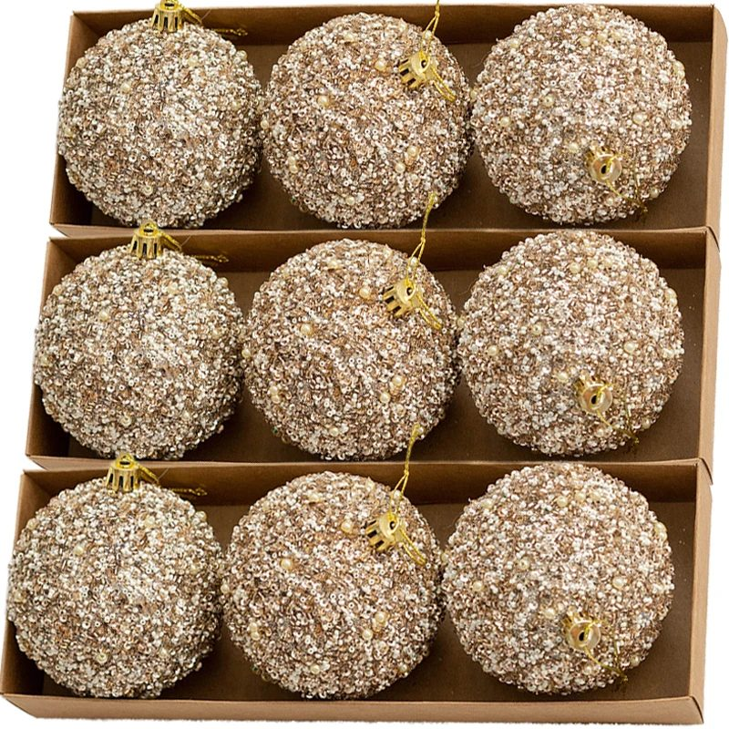
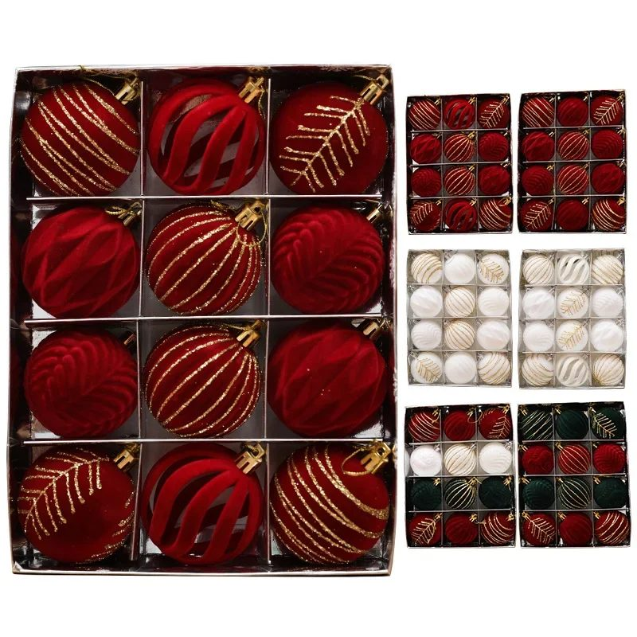
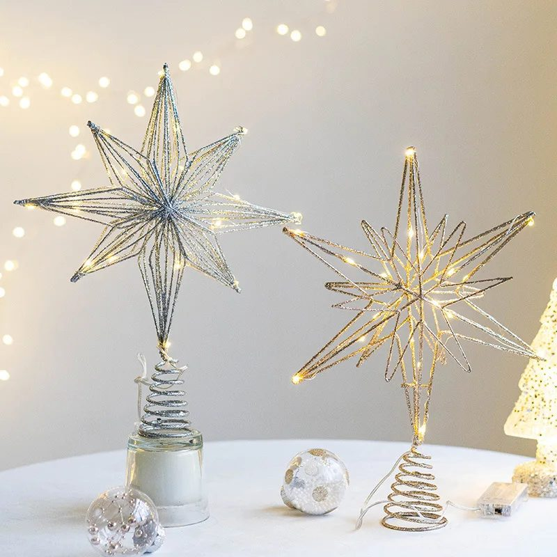
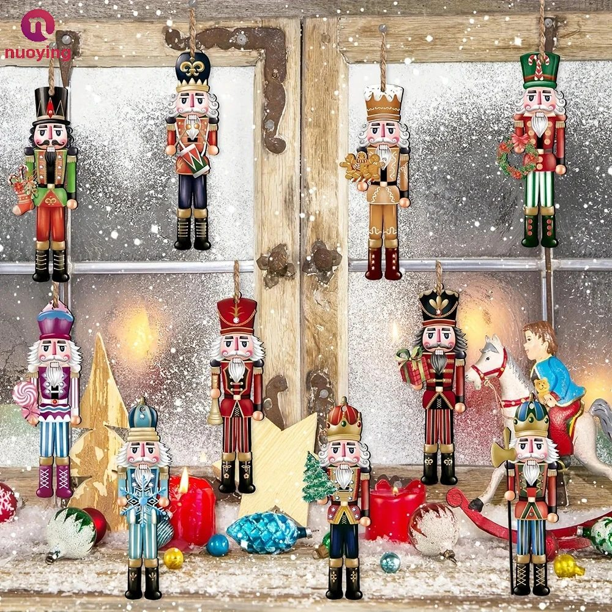
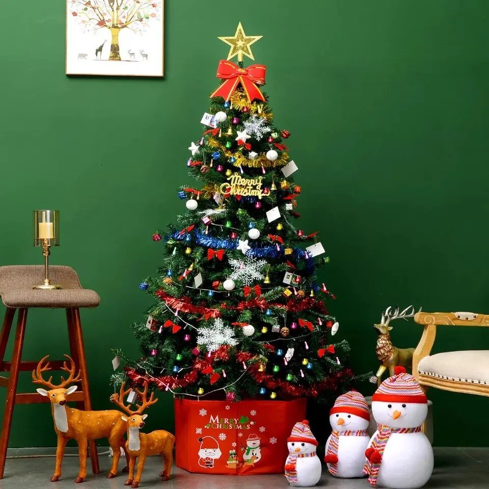
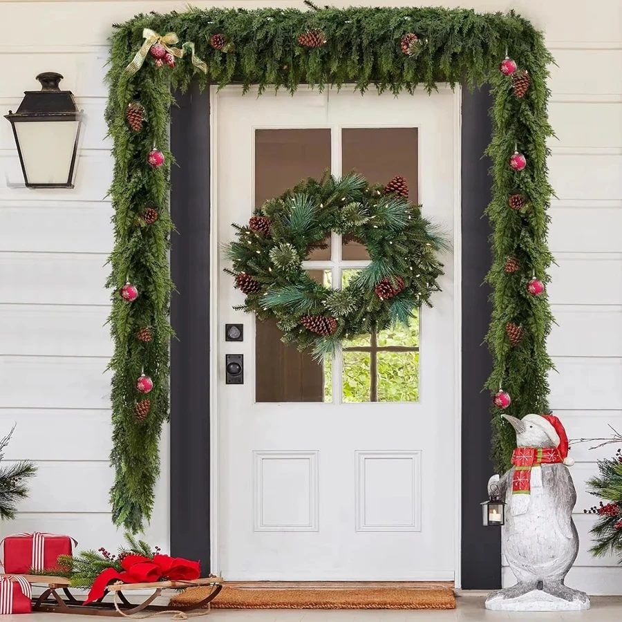
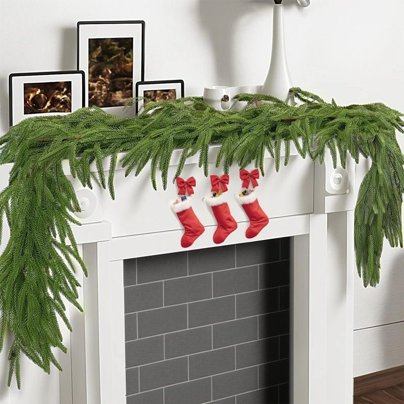

Árbol
Bolas, puntas, guirnaldas y packs para vestir el árbol.
🎄 La tienda de Navidad abre el 26 de octubre. Ya puedes ver lo que tendremos; ese día se podrá comprar.

36 bolas de Navidad de 4 cm
Mate, brillo y purpurina en el mismo color: el árbol hecho de una vez

12 bolas de purpurina champán de 6 cm
El árbol elegante: bolas doradas con brillo, en caja regalo

12 bolas de Navidad rojo vino de 6 cm
Terciopelo, rayas doradas y brillo: el árbol clásico en rojo

Estrella para la punta del árbol con luces
Estrella de alambre con luz cálida: el remate del árbol

Set de 36 cascanueces de madera para colgar
Soldaditos de madera pintados a mano para el árbol

Árbol de Navidad artificial de 120 cm
Árbol verde frondoso de 120 cm con soporte metálico: se monta en 5 minutos y dura años
Árbol de Navidad artificial de 150 cm
Árbol verde frondoso de 150 cm con soporte metálico: se monta en 5 minutos y dura años
Árbol de Navidad artificial de 180 cm
Árbol verde frondoso de 180 cm con soporte metálico: se monta en 5 minutos y dura años

Guirnalda de ciprés artificial de 2,75 m
Para el marco de la puerta, la chimenea, la escalera o el centro de mesa

Guirnalda de pino Norfolk de 1,5 m con luces
Ramas de pino suaves con luces cálidas para la repisa, la escalera o la puerta

20 adornos de madera para pintar y colgar del árbol
Árboles de madera natural con cordel: una tarde de manualidades en familia